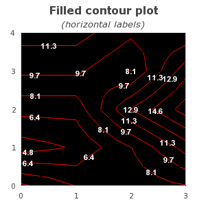

Table of Contents
This section describes additional functionality available in the pro-version v3.1p and above.
The use of filled ContourPlots requires the inclusion of the module
"jpgraph_contourf.php". The filled version of contour graphs
supports the following additional features compared to the regular contour graphs
Filled contour plots
Labelling of isobar lines in the contour plots
Two user selectable adaptive algorithms to determine the contours, one rectangular and one triangular based adaptive mesh algorithm.
The enhanced contour plot is contained in the new plot class
FilledContourPlot.
As a quick introduction the two examples below shows two contour graphs which makes use of these additional features
|
|
|
All basic formatting, such as specifying colors and number/location of the isobar lines are handled in exactly the same way as described in the previous section for basic contours.
The filled contour graph follows the exact same principles as for the non filled
graph described above. The core difference is that a filled graph is created as an
instance of class FilledContourPlot, i.e.
1 2 3 | $filledContour = new FilledContourPlot($data); |
Contour lines are controlled with the method
FilledContourPlot::ShowLines($aFlg,$aColorWithFilled='black')
The $aFlg is a boolean that determines if contour lines
should be shown or not. by default they are enabled. The second argument
$aColorWithFilled determines what color the contour
lines should have when the contour is filled. If the contour is not
filled then the contour lines will have the color of the isobar.
In order to have the contour filled the method
ContourPlot::SetFilled($aFlg) Determines if the contour
should be filled or not.
should be called.
Since there are n isobar lines and there needs to be n+1 colors to fill the graph there is a choice of what side should the color for isobar line n fill. The area above or the area below the isobar. In this library we use the convention that the color for isobar line n is used to fill the area up to the next highest isobar n+1.
If the colors are specified manually it is important that one more color than the number of isobar lines are specified. The convention is such that the color specified in the first position (position = 0 ) in the color array is used to fill the area below the lowest specified isobar.
An example will make this clear.
The graph below only uses three isobar lines (to keep things simple) which means that we need four colors. To create such a graph we use the lines
1 2 3 4 5 6 7 8 9 10 11 12 | $data = array( ... ); $isobar_colors = array('lightgray','teal:1.3','orange','red'); // Create a new contour graph with three isobar lines $cp = new ContourPlot($data,3); // Specify the colors manually $cp->SetIsobarColors($isobar_colors); |
as can be seen from the labels in the graph the algorithm has resulted in three isobar lines (as specified) at values 6.2, 10.5 and 14.8. The first color "gray" is used to fill the area below the smallest isobar (6.2).
It should be noted that by specifying SetFilled(false) a non filled
contour graph can be created. However, the visual appearance compared with the
class ContourPlot will be slightly different. The reason is that
the filled contour plot class uses an adaptive algorithm that gives better fidelity
than the simpler non adaptive algorithm used in the standard (non-filled) contour
plot class. The contour corresponds to creating a contour with the plain contour
plot algorithm (class ContourPlot) using an interpolation factor of ~3-4.
In order to make it easier to follow the contour labels can be added inside the contour. The labels are placed using a heuristic algorithm that tries to place enough labels to make the plot easy to read but not as many labels as to make it crowded.
There are two main characteristic of the labels that can be controlled.
The font and color of the labels which are controlled by the two methods
FilledContourPlot::SetFont() and
FilledContourPlot::SetFontColor()
Whether or not the label should follow the gradient of the isobar line at the point where the label is displayed or if it should always be drawn horizontally.
To enable or disable the display of the labels as well as determining if the label should follow the gradient or not the method
FilledContourPlot::ShowLabel($aFlg,$aFollowGradient)
is used. The two examples below show two variants of the same contour where the left graph have labels which follows the gradient and the right graph have labels that are always oriented horizontally.
|
|
Figure 23.5. Labels that are always horizontal. In this example we have also shown how to change the colors.  |
This section can be skipped without loss of continuity. The default method "rectangular" recursive adaptation is good enough for most circumstances.
In order to fully understand the effect of selecting which adaptive method to use it is first necessary to understand some background on how contours are created algorithmically.
Determining general contours for a function of two independent variables is equivalent to the problem of finding the equivalence class of all coordinate pairs (x,y) for which for C=f(x,y) which in general is a non-linear problem. This is an example of a problem that is computational very expensive to mathematically solve correct but quite tractable if we view a sampled version of the function. This means that we in general do not have access to f(x,y) instead we only know of its values at a number of grid points. This is also the cause of visually different contour plots for the same input data.
The difference lay in the core problem that in order to draw a continues contour we need to interpolate the unknown values in between the known sample points. This is therefore a degree of freedom where the actual choice of how we do the interpolation will cause the contour to be visually different depending on our choice.
While it would take to far in this manual to describe the full adaptive algorithm in all details we will show the different principles that underlying the two methods hat the user can select between.
In order to determine the isobars the given data points are considered to be vertices in a grid where each vertice is connected with an edge. There are two basic ways to connect the points with edges; rectangular and triangular. In the first way four points are connected to form a square and in the second way three point are connected to form a triangle. The so created square or triangles will be referred to as a submesh consisting of four and three sides respectively.
To determine the isobars each submesh is recursively divided until each side is small enough to only have one crossing isobar. The exact position of the crossing is determined by linear interpolation between the two corresponding vertices.
The figures below shows the sequences for the triangle recursive division. The recursion continues until each edge has exactly one crossing of an isobar.
|
|
|
|
In the same way the sequence of figures below shows the principle for the quadratic recursive subdivsion of the mesh for first three steps.
|
|
|
|
Needless to say these two variants give slightly different visual appearance of the resulting contour plot and neither of the two method can be considered "the right method". Triangularization tends to work better (and faster) for high frequency contour plots and gives a more "edgy" result. The quadratic subdivision might require more recursive steps for high frequency contours but in general gives a smoother look of the resulting contour.
By default the library uses a rectangular mesh division and that is the method that has been used in all the previous examples. As an illustration the effect of the method have the two figures below shows the same data as we have used in the previous figures to display a contour plot with 7 isobars. The left figures uses a rectangular division (the default) and the right figure uses a triangular division.
|
|
|
As can be seen in this case the triangular method favour elongated contours from southwest to northeast while the rectangular method favours circular contours.
The way to choose what method to use is by the method
FilledContourPlot::SetMethod($aMethod)
The possible options for $aMethod are
"rect" - Rectangualr algortihm (default)
"tri" - Triangular algorithm
It is possible to show the triangulation used by calling the method
FilledContourPlot::ShowTriangulation($aFlg). In the two
figures below the triangulation for the "rect" and "tri" method in the
previous examples are shown.
|
|
|